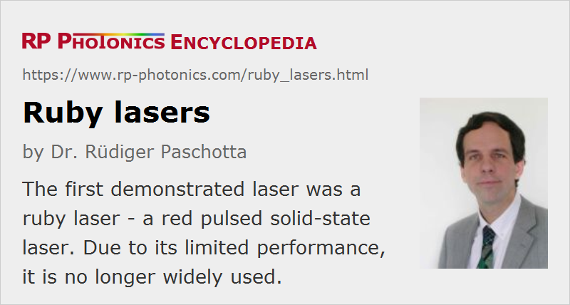

Ruby Lasers
Definition: solid-state lasers based on a ruby crystal
More general term: solid-state lasers
German: Rubin-Laser
How to cite the article; suggest additional literature
Author: Dr. Rüdiger Paschotta
A ruby laser is a red solid-state laser based on a synthetic ruby laser crystal as gain medium. Ruby is chromium-doped corundum (aluminum oxide, Cr3+:Al2O3). The first laser, demonstrated by Theodore H. Maiman at Hughes Research Laboratories in 1960, was a free-running flash-lamp pumped ruby laser emitting at 694.3 nm [1]. Optical pumping is possible in the green and blue spectral region.
Although many other solid-state lasers have later on been developed, ruby lasers belong to the relatively few solid-state visible lasers; most others are emitting in the infrared spectral region. In contrast to other red lasers, such as helium–neon lasers, they are suitable for generating intense pulses.
Ruby belongs to the class of three-level laser gain media and therefore requires quite high pump intensities for producing laser gain. Nd:YAG, a prominent example for a four-level gain medium, is much easier to operate. In addition, the required green or blue pump light makes diode pumping similarly difficult as for titanium–sapphire lasers; it is possible, however, with blue laser diodes [2]. Mostly, ruby lasers are pumped with flash lamps, either in free-running mode (with pulse durations of the order of 1 ms) or with Q switching for nanosecond pulse with correspondingly higher peak power. Quite high pulse energies (e.g. 1 J) can be achieved, although hardly in combination with high beam quality.
Due to their limited performance, ruby lasers are not widely used. Initial applications were for laser rangefinders, high-speed photography, pulsed holography, tattoo and hair removal (→ medical lasers), apart from the pulsed pumping of infrared dye lasers. Nowadays, some Q-switched ruby lasers are used for diamond drilling.
Suppliers
The RP Photonics Buyer's Guide contains 1 supplier for ruby lasers.
Questions and Comments from Users
Here you can submit questions and comments. As far as they get accepted by the author, they will appear above this paragraph together with the author’s answer. The author will decide on acceptance based on certain criteria. Essentially, the issue must be of sufficiently broad interest.
Please do not enter personal data here; we would otherwise delete it soon. (See also our privacy declaration.) If you wish to receive personal feedback or consultancy from the author, please contact him e.g. via e-mail.
By submitting the information, you give your consent to the potential publication of your inputs on our website according to our rules. (If you later retract your consent, we will delete those inputs.) As your inputs are first reviewed by the author, they may be published with some delay.
Bibliography
| [1] | T. H. Maiman, “Stimulated optical radiation in ruby”, Nature 187, 493 (1960) (first experimental demonstration of a laser), doi:10.1038/187493a0 |
| [2] | W. Luhs and B. Wellegehausen, “Diode pumped cw ruby laser”, OSA Continuum 2 (1), 184 (2019), doi:10.1364/OSAC.2.000184 |
See also: chromium-doped gain media, visible lasers, red lasers, alexandrite lasers
and other articles in the category lasers
|  |
If you like this page, please share the link with your friends and colleagues, e.g. via social media:
These sharing buttons are implemented in a privacy-friendly way!